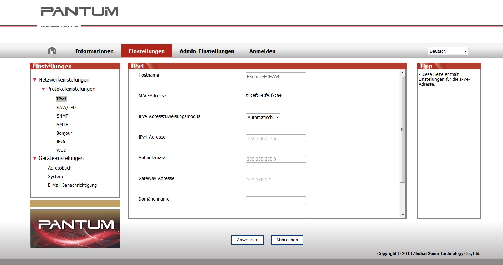

4. Einstellungen für verkabelte Netzwerke (für verkabelte Netzwerkdrucker)
Möglicherweise müssen Sie die Netzwerkparameter am Drucker anpassen. Sie können diese Parameter mithilfe des integrierten Webservers festlegen.
4.1. IP-Adresse festlegen
Die IP-Adresse kann automatisch mithilfe der DHCP-Funktion oder manuell festgelegt werden.
| Automatisch
Die DHCP-Funktion für die automatische Vergabe der IP-Adresse ist standardmäßig auf dem Drucker aktiviert.
1. Verbinden Sie den Drucker mithilfe eines Netzwerkkabels mit dem Netzwerk und führen Sie die vorbereitenden Schritte durch.
2. Der Drucker erhält die vom Server zugewiesene IP-Adresse automatisch. Die automatisch zugewiesene IP-Adresse kann nach einigen Minuten verwendet werden.
|
|
Hinweis:
|
• Wenn die automatische Zuweisung einer IP-Adresse über DHCP nicht möglich ist, verwendet der Drucker die Standard-IP-Adresse: 169.254.xx.xx.
• Wird die IP-Adresse des Druckers mit der DHCP-Funktion automatisch vom Netzwerk zugewiesen, kann sich die IP-Adresse des Druckers ändern, wenn der Drucker lange Zeit nicht verwendet wurde oder ein anderer Netzwerkzugangspunkt verwendet wird. In diesem Fall ist u. U. keine Verbindung zum Drucker möglich. Es wird daher empfohlen, die vom Netzwerk automatisch zugewiesene IP-Adresse mit der Mac-Adresse des Druckers zu verknüpfen, wenn die DHCP-Funktion aktiviert ist.
|
| Manuell
Geben Sie die IP-Adresse in die Adresszeile Ihres Browsers ein, um den integrierten Webserver zu öffnen.
1. Klicken Sie in der Navigationsleiste auf „Einstellungen“, um die Seite mit den Einstellungen zu öffnen.
2. Wählen Sie „Netzwerkeinstellungen – IPV4-Einstellungen“.
3. Legen Sie für „Zuweisungsmodus für IP-Adresse“ die Einstellung „Manuell“ fest und geben Sie die „IP-Adresse“ und die „Subnetzmaske“ ein. Die übrigen Einstellungen sind optional.
4. Klicken Sie auf „Anwenden“, um die Einstellungen zu speichern.
4.2. Drucker im Netzwerk installieren
Bei einer Installation im Netzwerk wird der Drucker direkt mit dem Netzwerk verbunden. Sie können festgelegen, dass alle Computer im Netzwerk den Drucker direkt verwenden dürfen.
1. Bevor Sie den Drucker einschalten, schließen Sie das Netzwerkkabel am Netzwerkanschluss des Druckers an, um eine direkte Verbindung mit dem Netzwerk herzustellen.
2. Schalten Sie den Drucker ein und warten Sie, bis die Statusanzeige im Bedienfeld den Status „Bereit“ anzeigt (siehe Abbildung).
3. Legen Sie die Drucker-CD in den Computer ein. Wenn das Softwareinstallationsprogramm nicht automatisch startet, suchen Sie die Datei „setup.exe“ auf der CD. Doppelklicken Sie auf die Datei, um sie auszuführen.
4. Folgen Sie den Anweisungen des Installationsprogramms.
5. Fahren Sie fort, bis die Installation abgeschlossen ist.
4.3. Festlegen von Netzwerkprodukten
4.3.1. Netzwerkeinstellungen anzeigen oder ändern
Sie können den integrierten Webserver verwenden, um IP-Einstellungen anzuzeigen oder zu ändern.
1. Drücken Sie im Bedienfeld lange auf die Taste „Abbrechen/Fortfahren“, um die DEMO-Informationsseite zu drucken, auf der die IP-Adresse des Druckers angegeben ist. Die DEMO-Seite kann durch langes Drücken der Taste im Bedienfeld (siehe Abbildung unten) gedrückt werden, wenn der Drucker gerade nicht aktiv ist.
2. Geben Sie die IP-Adresse in die Adresszeile Ihres Webbrowsers ein, um auf den integrierten Webserver zuzugreifen.
3. Klicken Sie auf die Registerkarte „Einstellungen“, um die Netzwerkinformationen anzuzeigen. Ändern Sie die Einstellungen wie erforderlich.

4.3.2. Netzwerkkennwort über Webserver festlegen oder ändern
Sie können den integrierten Webserver verwenden, um ein neues Netzwerkkennwort festzulegen oder ein vorhandenes Kennwort zu ändern.
|
|
Hinweis:
|
• Der Standardbenutzername lautet „admin“ und das voreingestellte Kennwort lautet „000000“.
|
1. Melden Sie sich an, um den integrierten Webserver zu öffnen.
2. Klicken Sie auf die Registerkarte „Administratoreinstellungen“.
3. Geben Sie das neue Kennwort in das Feld „Kennwort“ ein und wiederholen Sie die Eingabe im Feld „Kennwort bestätigen“.
4. Klicken Sie unten im Fenster auf die Schaltfläche „Anwenden“, um die Einstellungen zu speichern.
4.3.3. Werkseinstellungen wiederherstellen
Wenn Sie alle Einstellungen des Druckers zurücksetzen möchten, können Sie die Werkseinstellungen wiederherstellen, indem Sie auf die Taste „Abbrechen/Fortfahren“ drücken, wenn der Drucker ausgeschaltet ist. Hierdurch wird der Drucker eingeschaltet. Halten Sie die Taste zehn Sekunden lang gedrückt, bis der Drucker den Status „Bereit“ anzeigt und das Zurücksetzen abgeschlossen ist.